전자산업기사 (2006-05-14 기출문제)
1과목: 전자회로
1. 위상변조(PM)에 대한 설명 중 옳은 것은?
- 변조지수 mP 는 신호의 진폭에 관계없다.
- 벼조지수 mP 는 신호의 주파수에는 관계없다.
- 최대 주파수 편이는 변조 주파수에 관계없다.
- 최대 주파수 편이는 변조 주파수에 반비례한다.
(정답률: 50%)

2. 수정 발진기는 수정 진동자의 리액턴스 주파수 특성이 어떻게 될 때 안정한 발진을 지속하는가?
- 용량성
- 유도성
- 저항성
- 임피던스성
(정답률: 80%)
3. 다음 그림은 피변조파의 주파수 스펙트럼(Spectrum)을 나타낸 것이다. 어떠한 변조 방식인가? (단. fc 는 반송파 성분이다.)
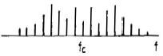
- AM
- FM
- PM
- PPM
(정답률: 56%)
4. 전파 정류 회로의 직류 출력 전력은 반파 정류 회로에 비하여 몇 배인가?
- 2배
- 4배
- 6배
- 8배
(정답률: 71%)
5. 이미터 전류를 1[mA] 변화 시켰더니 컬렉터 전류가 0.95[mA]가 변화 하였다면 β는 얼마인가?
- 0.95
- 10
- 19
- 95
(정답률: 30%)
6. 푸시풀(push-pull) 증폭기의 설명으로 옳은 것은?
- B급이나 AB급으로 동작시킨다.
- 두 입력의 위상은 동상이어야 한다.
- 공급 전압에 리플이 포함되어 있으면 부하에 나타난다.
- 트랜지스터의 비선형 특성에서 오는 일그러짐이 증가한다.
(정답률: 72%)
7. 다음 그림은 무슨 회로인가?
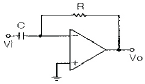
- 적분기
- 미분기
- 가산기
- 계측용 증폭기
(정답률: 67%)
8. 부궤횐(negative feedback) 증폭기의 특징이 아닌 것은?
- 잡음이 감소된다.
- 대역폭이 감소된다.
- 주파수 특성이 개선된다.
- 비직선 왜곡이 감소된다.
(정답률: 70%)
9. 피어서B-E형 수정 발진 회로와 가장 관계가 깊은 발진 회로는?
- 콜피츠 발진회로
- 하틀리 발진회로
- 동조형 발진회로
- 브리지형 RC 발진회로
(정답률: 54%)
10. Field Effect Transistor가 Bipolar Transistor에 비해서 장점이 되는 사항들이다. 이 중 옳지 않은 것은?
- 이득-대역폭 적이 크다.
- 입력 임피던스가 높다.
- 잡음(Noise)이 적다.
- 열적으로 안정하다.
(정답률: 55%)
11. 멀티바이브레이터의 단안정, 무안정, 쌍안정의 결점은 어떻게 하는가?
- 결합 회로의 구성에 따라 결정한다.
- 전원 전압의 크기에 따라 결정한다.
- 전원 전류의 크기에 따라 결정한다.
- 바이어스 전압의 크기에 따라 결정한다.
(정답률: 81%)
12. 트랜지스터 규격집을 보니 이미터 접지형(Common Emitter)의 경우 순방향 전류이득이 199였다. 이 트랜지스터의 베이스 접지형 순방향 전류 이득은?
- 0.99397
- 0.99500
- 1.0⑤03
- 1.0⑤⑤
(정답률: 81%)
13. 다음 원소 중 도우너 원자로 사용되지 않는 것은?
- In(인듐)
- P(인)
- As(비소)
- Sb(안티몬)
(정답률: 71%)
14. 다음 그림과 같은 OP AMP 회로에서 출력 전압 V0 는? (단 V1 = +1V, V2 = +2V, V3 = +3V, R1 = 500kΩ, R2 =1kΩ, R3 =1M , Ω Rf = 1MΩ이다.)
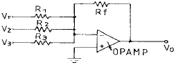
- -3V
- -7V
- +3V
- +7V
(정답률: 73%)
15. 이미터 플로어는 어떠한 궤환 증폭기인가?
- 직렬전류 궤환
- 직렬전압 궤환
- 병렬전류 궤환
- 병렬전압 궤환
(정답률: 48%)
16. 점유율(duty cycle)을 나타내는 식으로 옳은 것은? (단. τ는 펄스폭이며, T는 반복주기이다.)
- τ/T
- T/τ
- 1/T
- 1/τ
(정답률: 75%)
17. 다음 식 중 정류회로의 맥동률을 표시하는 식은? (단, Idc : 직류 출력전류, Irms 는 출력전류의 실효치이다.)
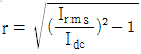
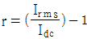
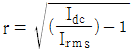
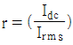
(정답률: 59%)
18. 그림과 같은 회로의 입력단자 AB에 그림과 같은 전압을 입력시켰을 때 출력단자 CD에서 볼 수 있는 출력파형은?
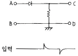
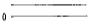
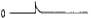
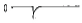
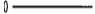
(정답률: 75%)
19. 상보 대칭형(complementary) 효율은 몇 % 정도인가?
- 12.5%
- 50%
- 78.5%
- 85%
(정답률: 75%)
20. 진폭 변조(AM)에서 과변조(over modulation)하면 어떠한 현상이 나타나는가?
- 변조 일그러짐이 발생한다.
- 혼신을 줄일 수 있다.
- 주파수가 안정된다.
- 선형성이 좋아진다.
(정답률: 95%)
2과목: 전기자기학 및 회로이론
21. 두 자성체의 경계면에서 경계조건을 설명한 것 중 옳은 것은?
- 자계의 법선성분은 서로 같다.
- 자계와 자속밀도의 대수합은 항상 0 이다.
- 자속밀도의 법선성분은 서로 같다.
- 자계와 자속밀도의 대수합은 ∞ 이다.
(정답률: 42%)
22. 전압 V[V]로 충전되어 있는 정전용량 C 인 공기콘덴서 사이에 ε0 = 2 인 유전체를 채운 경우의 전계의 세기는 공기인 경우의 몇배가 되는가?
- 1
- 2
- 0.1
- 0.5
(정답률: 35%)
23. 유전률이 각 각 다른 두 종류의 유전체 경계면에 전속이 입사될 때 이 전속의 방향은?
- 굴절
- 반사
- 회절
- 직진
(정답률: 82%)
24. 자속밀도 B에 관한 식으로 항상 성립되는 식은?
- grad B -= 0
- rot B = 0
- div B = 0
- B= 0
(정답률: 87%)
25. 정전용량 1㎌ 의 콘덴서를 1000V 충전시킨 후 이것을 큰 전기저항을 가진 도선으로 단열적으로 방전했다면 도선의 온도상승은 약 몇 ℃ 인가? (단, 도선의 열용량은 0.09[cal/℃]이다.)
- 1.32
- 1.62
- 1.93
- 2.22
(정답률: 31%)
26. 도체계에서 임의의 도체를 일정 전위(영전위)의 도체로 완전 포위하면 내외 공간의 전계를 완전 차단할 수 있다. 이것을 무엇이라고 하는가?
- 정전응력(靜電應力)
- 전자차폐(電磁遮蔽)
- 전자관성(電磁慣性)
- 정전차폐(靜電遮蔽)
(정답률: 81%)
27. 다음 중 유도기전력의 크기는 폐회로에 쇄교하는 자속의 시간적 변화율에 비례한다는 법칙은?
- 패러데이 법칙
- 앙페에르의 주회적분 법칙
- 쿨롱의 법칙
- 플레밍의 오른손 법칙
(정답률: 32%)
28. 100MHz의 전자파의 파장은 몇 m 인가?
- 0.3
- 0.6
- 3
- 6
(정답률: 35%)
29. 원형 도체판 2매를 사용하여 콘덴서를 말들 경우 양극판간의 간격을 처음의 2배로 할 때의 정전용량을 처음과 같도록 하기 위해서는 도체판의 반지름을 몇 배로 하면 되는가?
- 2
- 3
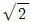
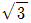
(정답률: 33%)
30. 엘라스턴스(elastance)는 무엇과 같은가?
- 고유저항의 역수
- 정전용량의 역수
- 저항의 역수
- 도전률의 역수
(정답률: 58%)
31. 50[μF]의 콘덴서에 100[V], 60[Hz]의 교류 전압을 가할 때의 무효 전력은?
- 40π[Var]
- 60π[Var]
- 120π[Var]
- 240π[Var]
(정답률: 54%)
32. 비정현파의 왜형률(歪形率)을 나타내는 식은?
- 전 고조파의 실효치/기본파의 실효치
- 전 고조파의 최대치/기본파의 실효치
- 기본파의 최대치/전 고조파의 최대치
- 기본파의 실효치/전 고조파의 실효치
(정답률: 32%)
33. 무한히 긴 전송 회로의 반사 계수는?
- 0
- 0.2
- 0.3
- 1
(정답률: 75%)
34. 인덕턴스 L1 =10[mH], L2 =10[mH]이고, 상호 인덕턴스 M이 5[mH]일 때 결합계수 K는 얼마인가?
- 0.1
- 0.2
- 0.3
- 0.5
(정답률: 77%)
35. 그림과 같은 R-L 직렬회로의 정상 전류[A]는?
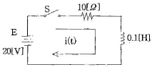
- 0.5
- 1
- 1.5
- 2
(정답률: 58%)
36. 이상변압기(ideal transformer)를 만족하는 3가지 조건이 아닌 것은?
- 두 코일 간의 결합계수가 1일 것
- 코일에 관계되는 손실이 0일 것
- 두 코일의 각 인덕턴스가 무한대일 것
- 단지 전압비는 권수비의 역수와 같을 것
(정답률: 70%)
37. ABCD 파라미터(parameter)에서 C는?
- 단락 역방향 전달 어드미턴스
- 개방 역방향 전달 어드미턴스
- 개방 순방향 전달 어드미턴스
- 단락 순방향 전달 어드미턴스
(정답률: 74%)
38. 다음 T형 4단자 회로망의 4 단자 정수(ABCD 파라미터) 중 B는?
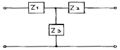
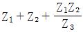
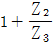
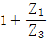
- Z3
(정답률: 57%)
39. 다음 그림의 회로가 정저항 회로이면, 저항 R의 값은? (단, L = 100[mH]이고, C = 0.1[㎌]이다.)
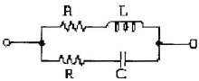
- 103 [Ω]
- 104 [Ω]
- 106 [Ω]
- 108 [Ω]
(정답률: 74%)
40. 선형 회로망에 가장 관계가 있는 것은?
- 렌츠의 법칙
- 중첩의 원리
- 키르히호프의 법칙
- 플레밍의 왼손법칙
(정답률: 76%)
3과목: 전자계산기일반
41. 중앙처리장치 내부의 순간순간의 상태(PC, Condition Code, Interrupt Code 및 다른 상태)에 관한 정보를 포함하고 있는 것을 무엇이라 하는가?
- Interrupt
- Machine Check
- PSW
- SVC
(정답률: 65%)
42. 컴파일 기법의 언어가 아닌 것은?
- COBOL
- BASIC
- C
- FORTRAN
(정답률: 56%)
43. 주기억장치에서 기억된 명령을 해독하기 위하여 꺼내는 작업을 무엇이라고 하는가?
- fetch
- timing
- polling
- interrupt
(정답률: 91%)
44. 어셈블리어 프로그램을 기계어로 바꾸어 주는 것은?
- compiler
- assembler
- interpreter
- loader
(정답률: 63%)
45. 다음 중 조합논리 회로가 아닌 것은?
- 전가산기
- 4X1 멀티플렉서
- 8진 UP 카운터
- 반감산기
(정답률: 72%)
46. 순서도 작성시 사용하는 특징에 속하지 않는 것은?
- 코딩하기가 쉽다.
- 분석 과정이 명료해진다.
- 프로그램의 수정, 추가가 어렵다.
- 논리적인 오차나 불합리한 점을 쉽게 발견할 수 있다.
(정답률: 81%)
47. 중앙처리장치(CPU)는 ( ① )와 ( ② )로 구성되어 있다.
- ①논리장치 ②연산장치
- ①제어장치 ②연산장치
- ①제어장치 ②논리장치
- ①연산장치 ②산술장치
(정답률: 75%)
48. 사용자에 의해 특정한 언어로 작성된 프로그램을 무엇이라 하는 가?
- 편집 프로그램
- 실행 프로그램
- 목적 프로그램
- 원시 프로그램
(정답률: 74%)
49. ALU에서 처리된 결과를 임시 저장하는 레지스터는?
- 상태 레지스터
- 누산기
- 명령레지스터
- 범용레지스터
(정답률: 77%)
50. 어떤 컴퓨터의 번지레지스터(address register)가 16비트일 때 최대 번지지정 가능한 용량은 몇 k가 되겠는가?
- 256
- 64
- 32
- 16
(정답률: 66%)
51. 컴퓨터의 실행은 4가지 단계를 반복적으로 거치면서 행한다. 다음 중에 속하지 않는 단계는?
- Execution Cycle
- Access Cycle
- Fetch Cycle
- Interrupt Cycle
(정답률: 40%)
52. 특정의 비트 또는 특정의 문자를 삭제하기 위해 필요한 연산은?
- OR 연산
- MOVE 연산
- COMPLEMENT 연산
- AND 연산
(정답률: 78%)
53. 컴퓨터의 직렬 입ㆍ출력 인터페이스가 아닌 것은?
- USART
- ACIA
- SIO
- PPI
(정답률: 77%)
54. 다음 그림에서 A의 값은 1010, B의 값은 0011이 입력될 때 출력 X 값은?
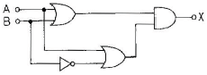
- 1100
- 0011
- 1010
- 0101
(정답률: 63%)
55. 단항(unary) 연산이 아닌 것은?
- COMPLEMENT
- SHIFT
- ROTATE
- X-OR
(정답률: 84%)
56. 주소지정방식에 해당 되지 않는 것은?
- 명령 주소(instruction addressing)
- 간접 주소(indirect addressing)
- 직접 주소(direct addressing)
- 즉시 주소(immediate addressing)
(정답률: 68%)
57. 어떤 컴퓨터의 명령어에서 CP 코드가 8비트라면 명령어의 최대 가지 수는 얼마나 되겠는가?
- 257
- 256
- 255
- 254
(정답률: 96%)
58. 로더(Loader)의 기능이 아닌 것은?
- Allocation
- Relocation
- Job Processing
- Linking
(정답률: 70%)
59. 마이크로컴퓨터 내부의 버스에 해당하지 않는 것은?
- data bus
- control bus
- address bus
- shift bus
(정답률: 84%)
60. 연산자(operation)의 기능에 속하는 것은?
- 함수연산 기능
- 직접명령 기능
- 간접명령 기능
- 주소지정 기능
(정답률: 48%)
4과목: 전자계측
61. 유전체 손실각을 측정할 수 있는 브리지는?
- schering bridge
- maxwell bridge
- wheatstone bridge
- kohlrausch bridge
(정답률: 76%)
62. 그림의 회로에서 a, b 양단의 전압을 측정하니 V볼트였다. 부하저항 R 값은? (단, E : 전지전압, r : 전자내부저항)
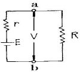
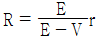
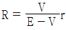
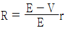
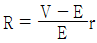
(정답률: 60%)
63. 수신기의 방해 중 타 수신기의 중간 주파 세력이 들어와 주는 방해는?
- 연상 방해
- 중간 주파 방해
- 2신호 혼신 방해
- 2신호 비트 방해
(정답률: 84%)
64. 그림과 같은 회로에서 브리지 평형이 되어 검류계 G가 0을 가르켰을 때 RX 의 값은?
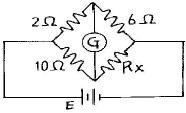
- 1.2[Ω]
- 12[Ω]
- 14[Ω]
- 30[Ω]
(정답률: 71%)
65. 가동코일형 계기에서 영구자석 간에 연철심을 사용하는 이유는?
- 평등 자계로 하기 위하여
- 제어 작용을 시키기 위하여
- 불평등 자계로 하기 위하여
- 제동 작용을 시키기 위하여
(정답률: 86%)
66. 가동철편형 계기의 구동 토크(Tp)와 전류(I)의 관계가 옳은 것은?
- I/2에 비례한다.
- I에 비례한다.
- I2 에 비례한다.
 에 비례한다.
에 비례한다.
(정답률: 74%)
67. 오실로스코프의 시간 축에 주로 사용하는 파형은?
- 펄스파
- 정현파
- 구형파
- 톱니파
(정답률: 53%)
68. 브라운관 상에 나타난 그림과 같은 변조 파형의 최소치 B를 4[㎜]라 할 때 변조도를 80[%]로 하기 위해서는 최대치 A를 몇 [㎜]로 하면 되는가?
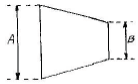
- 30
- 36
- 40
- 43
(정답률: 69%)
69. 전압 증폭도가 500배이면 데시벨 이득은 약 몇 [dB]인가?
- 40
- 50
- 54
- 65
(정답률: 64%)
70. 헤테로다인 주파수계에서 Single beat 법보다 Double beat 법이 좋은 이유는?
- 구조가 간단하다.
- 취급이 용이하다.
- 오차가 적다.
- 측정 범위가 넓다.
(정답률: 78%)
71. 수신기에 일정한 입력 신호를 가했을 때 재조정을 하지 않고 얼마나 오랫동안 일정한 출력을 얻을 수 있는 가의 능력은?
- 감도
- 선택도
- 충실도
- 안정도
(정답률: 73%)
72. 정전형 계기의 특징이 아닌 것은?
- 눈금이 자승 눈금으로 된다.
- 실효치 눈금이므로 파형 오차가 있다.
- 교류, 직류 양용 계기로 주파수 특성이 좋다.
- 고전압 측정에 적합하다.
(정답률: 32%)
73. 정밀 헤테로다인 주파수계의 측정 상 주의할 점 중 옳지 않은 것은?
- 전원 전압은 규정 값으로 유지할 것
- 피측정 회로에 너무 밀결합 시키지 말 것
- 보간 발진기의 f-c 곡선은 수시로 교정할 것
- 교정 후 정밀 측정은 단 시간 내에 하지 않을 것
(정답률: 63%)
74. 계수형 주파수계로 측정할 수 없는 것은?
- 시간간격 측정
- 주기
- 분주비
- 고주파 진폭
(정답률: 84%)
75. Q-미터로 측정할 수 없는 것은?
- 절연 저항
- 용량
- 주파수 저항
- 코일의 Q
(정답률: 44%)
76. 물리량(전압, 전류 등)의 크기를 숫자로 바꾸는 장치는?
- A-D 변환기
- DC-AC 변환기
- D-A 변환기
- AC-DC 변환기
(정답률: 75%)
77. 직류 전압을 측정할 수 없는 계기는?
- 열전형
- 유도형
- 정전형
- 전류력계형
(정답률: 45%)
78. 아래의 블록도는 무엇을 측정하고자 하는가?
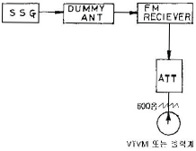
- FM 수신기의 감도 측정
- FM 수신기의 선택도 측정
- FM 수신기의 잡음 측정
- FM 수신기의 영상 신호대 잡음비 측정
(정답률: 57%)
79. 지시 계기의 제동 장치로 쓰이지 않는 것은?
- 와류 제동
- 공기 제동
- 액체 제동
- 스프링 제동
(정답률: 73%)
80. 그림과 같은 등가회로로 표시할 수 있는 콘덴서의 유전체 역률 tanδ를 나타내는 식 중 옳은 것은?
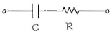
- tanδ = wCR
- tanδ = 1/wCR
- tanδ = wC
- tanδ = wR
(정답률: 75%)